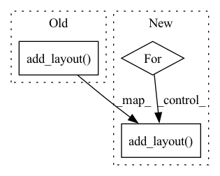

Pattern ID :27302

Before Change
label_standoff=6, border_line_color=None, location=(0, 0))
p.add_layout(color_bar, "right")
show(p)
After Change
figures = []
for k, v in file_label_dict.items():
f = v
f = f[[image_path_col]+feature_names[:num_features]]
f[image_path_col] = f[image_path_col].astype(str)
i = f[image_path_col].tolist()
i = [os.path.basename(str(x)) for x in i]
f[image_path_col] = i
f = f.set_index(image_path_col)
f.columns.name = "features"
images = list(f.index)
features = list(f.columns)
df = pd.DataFrame(f.stack(), columns=["value"]).reset_index()
mapper = LinearColorMapper(palette=colors, low=df.value.min(), high=df.value.max())
p = figure(title=("Extracted Imaging Features, Label "+str(k)),
x_range=features, y_range=images,
x_axis_location="above", plot_width=num_features*8, plot_height=num_images*8,
tools=TOOLS, toolbar_location="below",
tooltips=[("image", "@img_path"), ("feature", "@features"), ("value", "@value")])
p.grid.grid_line_color = None
p.axis.axis_line_color = None
p.axis.major_tick_line_color = None
p.axis.major_label_text_font_size = "4pt"
p.axis.major_label_standoff = 0
p.xaxis.major_label_orientation = pi / 3
p.rect(x="features", y="img_path", width=1, height=1,
source=df,
fill_color={"field": "value", "transform": mapper},
line_color=None)
color_bar = ColorBar(color_mapper=mapper, major_label_text_font_size="8pt",
ticker=BasicTicker(desired_num_ticks=len(colors)),
// formatter=PrintfTickFormatter(format="%d%%"),
label_standoff=6, border_line_color=None, location=(0, 0))
p.add_layout(color_bar, "right")
tab = Panel(child=p)
figures.append(p)
// show(p)
In pattern: SUPERPATTERN
Frequency: 3
Non-data size: 3
Instances
Fragment ID: 81107013
Project Name: radtorch/radtorch
Commit Name: 3d2c33143979772459c0e38c787e7366c56e4f42
Time: 2020-03-12
Author: elbanan@users.noreply.github.com
File Name: radtorch/visutils.py
M Class Name: AnonimousClass
N Class Name: AnonimousClass
M Method Name: plot_features(7)
N Method Name: plot_features(7)
M Parent Class:
N Parent Class:
M File Name: radtorch/visutils.py
N File Name: radtorch/visutils.py
M Start Line: 394
M End Line: 436
N Start Line: 392
N End Line: 445
'>
Before Change
ind = ind +1
legend = Legend(items=legend_items, location=(10, -20))
p.add_layout(legend, "right")
// p.legend.location = "top_center"
p.legend.inactive_fill_alpha = 0.7
p.legend.border_line_width = 0
p.legend.click_policy="hide"
After Change
legend_items.append(("Discriminator Loss on Fake Images" , [y]))
ind = ind +1
else:
for m in ["Loss", "Accuracy",]:
ind = 0
if m =="Loss":
legend_items = []
p = figure(plot_width=figure_size[0], plot_height=figure_size[1], title=("Loss"), tools=TOOLS, toolbar_location="below", tooltips=[("","@x"), ("","@y")])
for i in metrics_list:
x = p.line(i.index.to_list(), i.Train_Loss.to_list() , line_width=2, line_color= COLORS2[ind])
y = p.line(i.index.to_list(), i.Valid_Loss.to_list() , line_width=2, line_color= COLORS2[-ind], line_dash="dotted")
legend_items.append((("Model "+str(ind)+" Train Loss") , [x]))
legend_items.append(("Model "+str(ind)+" Valid Loss" , [y]))
ind = ind +1
elif m == "Accuracy":
legend_items = []
p = figure(plot_width=figure_size[0], plot_height=figure_size[1], title=("Accuracy"), tools=TOOLS, toolbar_location="below", tooltips=[("","@x"), ("","@y")])
for i in metrics_list:
x = p.line(i.index.to_list(), i.Train_Accuracy.to_list() , line_width=2, line_color= COLORS2[ind])
y = p.line(i.index.to_list(), i.Valid_Accuracy.to_list() , line_width=2, line_color= COLORS2[-ind], line_dash="dotted")
legend_items.append((("Model "+str(ind)+" Train Accuracy") , [x]))
legend_items.append(("Model "+str(ind)+" Valid Accuracy" , [y]))
ind = ind +1
legend = Legend(items=legend_items, location=(10, -20))
p.add_layout(legend, "right")
// p.legend.location = "top_center"
p.legend.inactive_fill_alpha = 0.7
p.legend.border_line_width = 0
p.legend.click_policy="hide"
'>
Fragment ID: 81107015
Project Name: radtorch/radtorch
Commit Name: 51cacfb6ec45f2fdaa8dcad9f01d936d70c24ad5
Time: 2020-05-14
Author: elbanan@users.noreply.github.com
File Name: radtorch/utils/utils.py
M Class Name: AnonimousClass
N Class Name: AnonimousClass
M Method Name: show_metrics(3)
N Method Name: show_metrics(3)
M Parent Class:
N Parent Class:
M File Name: radtorch/utils/utils.py
N File Name: radtorch/utils/utils.py
M Start Line: 761
M End Line: 807
N Start Line: 761
N End Line: 811
'>
Before Change
// formatter=PrintfTickFormatter(format="%d%%"),
label_standoff=6, border_line_color=None, location=(0, 0))
p.add_layout(color_bar, "right")
grid = gridplot(figures, ncols=1)
show(grid)
After Change
// formatter=PrintfTickFormatter(format="%d%%"),
label_standoff=6, border_line_color=None, location=(0, 0))
for i in figures:
i.add_layout(color_bar, "right")
// p.add_layout(color_bar, "right")
grid = gridplot(figures, ncols=1)
'>
Fragment ID: 81107014
Project Name: radtorch/radtorch
Commit Name: 065e2011ac1c9b4965ce362fe62d839ce790089a
Time: 2020-03-12
Author: elbanan@users.noreply.github.com
File Name: radtorch/visutils.py
M Class Name: AnonimousClass
N Class Name: AnonimousClass
M Method Name: plot_features(7)
N Method Name: plot_features(7)
M Parent Class:
N Parent Class:
M File Name: radtorch/visutils.py
N File Name: radtorch/visutils.py
M Start Line: 399
M End Line: 499
N Start Line: 399
N End Line: 500